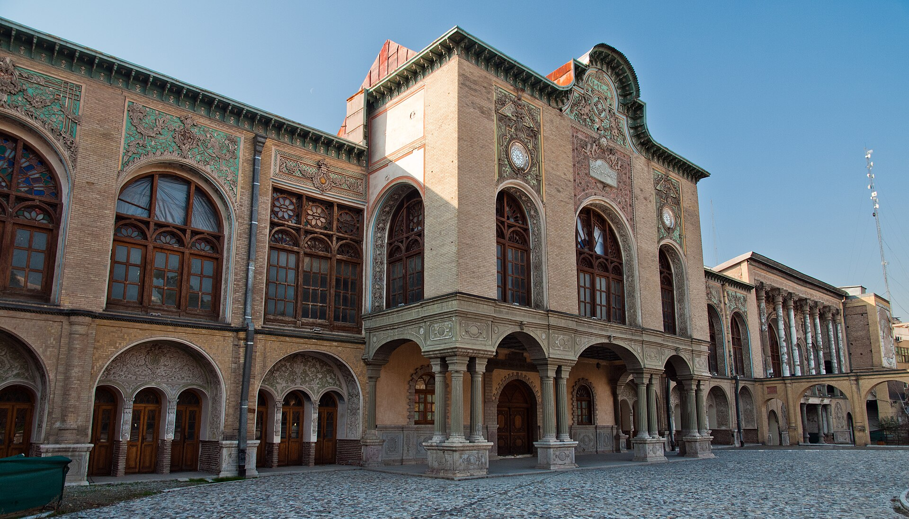
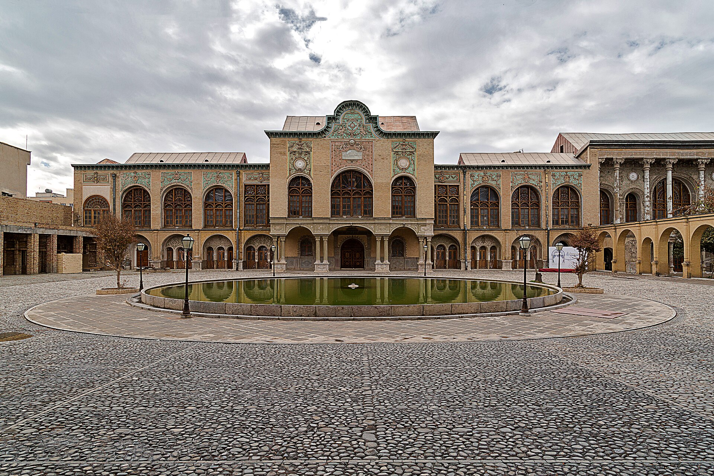
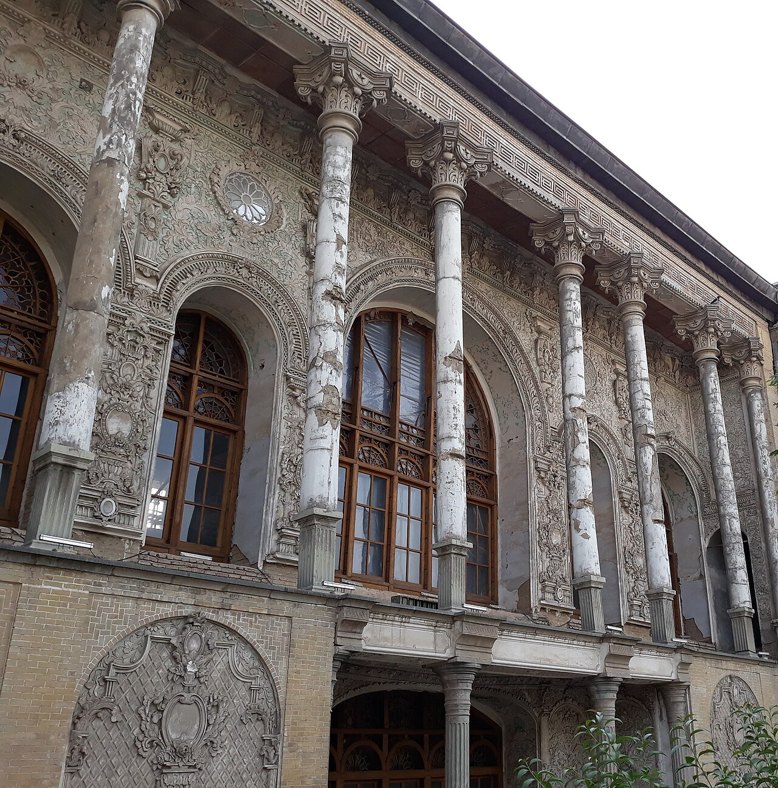

معرفی عمارت مسعودیه / درباره عمارت
گردش در دیوانخانه، سفرهخانه، حوضخانه، عمارت مشیری و باغ هشتحیاطی مجموعه.
ادامه معرفی ←
باغعمارت قاجاری ظلالسلطان؛ جایی که معماری ایرانی، روایت مشروطه و حافظه فرهنگی پایتخت در یک مجموعه گرد آمدهاند.
عمارت مسعودیه به دستور مسعود میرزا، فرزند ناصرالدینشاه و حاکم اصفهان، در سال ۱۲۹۵ قمری بر بستر باغ نظامیه ساخته شد. استاد شعبان معمارباشی این مجموعه را با کاشیکاری، گچبری، آینهکاری و نقاشی دیواری شکل داد.
امروز این بنا نه فقط یک اثر معماری، بلکه فضایی برای بازدید، روایت تاریخ تهران، رویدادهای فرهنگی و پژوهش است.

هر بخش از سایت، روایتی کوتاه از عمارت، تاریخ، رسانه، دانش و ارتباط با مخاطبان است.
گردش در دیوانخانه، سفرهخانه، حوضخانه، عمارت مشیری و باغ هشتحیاطی مجموعه.
ادامه معرفی ←
از ظلالسلطان تا مشروطه، از نخستین کتابخانه و موزه تا وزارت معارف؛ مسعودیه حافظه زنده تهران است.
خواندن روایتها ←
نمایشگاه، تورهای تخصصی، مرمت، عکس و گزارشهای رسانهای مجموعه در یک اتاق خبر واحد.
اتاق رسانه ←
واژهنامه فضاها، هنرهای تزئینی، منابع پژوهشی و مسیرهای آموزشی برای دانشآموز و پژوهشگر.
ورود به دانشنامه ←
ماموریت مجموعه فرهنگیتاریخی مسعودیه برای حفاظت، احیا و معرفی این میراث ملی.
شناخت مجموعه ←
نشانی میدان بهارستان، مسیر مترو، درخواست بازدید گروهی و راههای تماس با دبیرخانه.
تماس و بازدید ←


